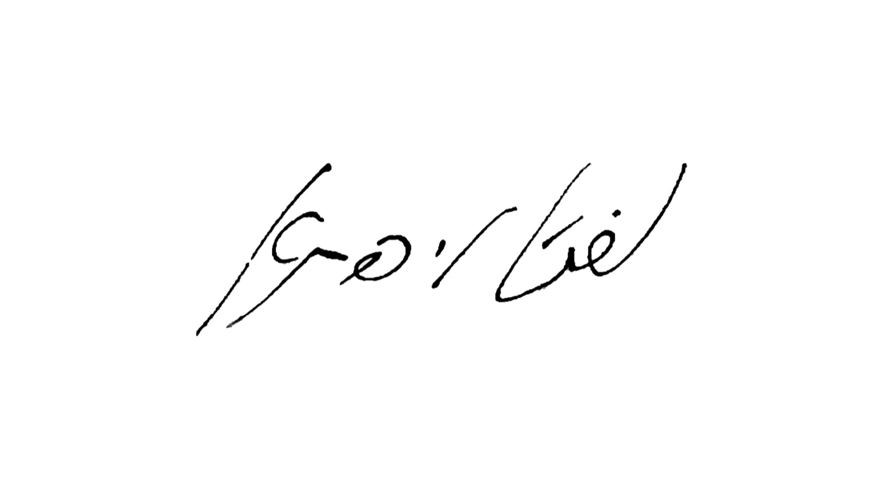
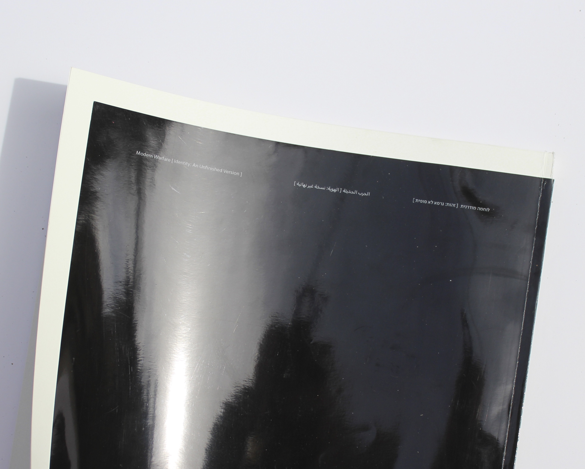

manyone TLV / SOCIAL MEDIA
1984 / 2025 /GRAPHIC & TYPOGRAPHIC DESIGN
Hevel /BRANDING

lifta لفتا /VISUAL IDENTITY
Portrait /PHOTOGRAPHY
Sabra /BRANDING
Sela /UX/UI DESIGN
Posters /GRAPHIC DESIGN / IMAGEMAKING

Modern Warfare /GRAPHIC & TYPOGRAPHIC DESIGN